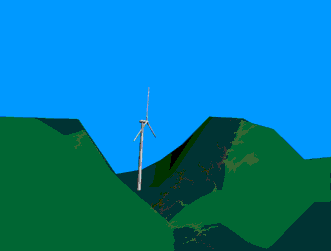

Speed Up Effects: Tunnel Effect

If you push an ordinary bicycle air pump, (just point to the
image with a Netscape 3 or 4 Browser, do not click) you will
notice that the air leaving the nozzle moves much faster than
the speed with which you are pushing. The reason, of course,
is that the nozzle is much narrower than the cylinder in the
pump.
Tunnel
Effect

If you take a walk between tall buildings, or in a narrow mountain
pass, you will notice that the same effect is working:
 The air becomes compressed on the windy side
of the buildings or mountains, and its speed increases considerably
between the obstacles to the wind. This is known as a "tunnel
effect".
The air becomes compressed on the windy side
of the buildings or mountains, and its speed increases considerably
between the obstacles to the wind. This is known as a "tunnel
effect".
 So, even if the general wind speed in open
terrain may be, say, 6 metres per second, it can easily reach
9 metres per second in a natural "tunnel".
So, even if the general wind speed in open
terrain may be, say, 6 metres per second, it can easily reach
9 metres per second in a natural "tunnel".
 Placing a wind turbine in such a tunnel is
one clever way of obtaining higher wind speeds than in the surrounding
areas.
Placing a wind turbine in such a tunnel is
one clever way of obtaining higher wind speeds than in the surrounding
areas.
 To obtain a good tunnel effect the tunnel
should be "softly" embedded in the landscape. In case
the hills are very rough and uneven, there may be lots of turbulence in the area, i.e. the wind will
be whirling in a lot of different (and rapidly changing) directions.
To obtain a good tunnel effect the tunnel
should be "softly" embedded in the landscape. In case
the hills are very rough and uneven, there may be lots of turbulence in the area, i.e. the wind will
be whirling in a lot of different (and rapidly changing) directions.
 If there is much turbulence it may negate
the wind speed advantage completely, and the changing winds may
inflict a lot of useless tear and wear on the wind turbine.
If there is much turbulence it may negate
the wind speed advantage completely, and the changing winds may
inflict a lot of useless tear and wear on the wind turbine.

| Back | Home
| Forward |
© Copyright 2000 Soren Krohn.
All rights reserved.
Updated 6 August 2000
http://www.windpower.org/tour/speedup.htm